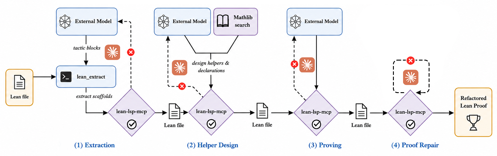

Refactors LLM-generated Lean proofs from PutnamBench into modular artifacts using a four-phase agent on Claude Code with lean-lsp-mcp.
Abstract
While Large Language Models (LLMs) have shown strong performance in generating formal proofs, their outputs often remain less readable, modular, maintainable, and reusable than proofs in mature formal mathematics libraries. We argue that this gap stems in part from the compile-first objective implicit in most proof-generation pipelines, which encourages monolithic or ad hoc proof scripts rather than library-quality artifacts. Existing approaches to proof-quality improvement often rely on explicit, computable optimization objectives. In practice, however, the most tractable and experimentally validated objectives are largely length-based, while higher-level qualities such as readability, modularity, maintainability, and reusability are difficult to reduce to reliable automatic metrics. Instead of optimizing proof improvement against a single proxy metric, we take a process-guided approach inspired by human proof-refactoring workflows. We propose an agentic framework $\textbf{Proof-Refactor}$ that decomposes proof refactoring into four phases: extracting candidate proof fragments, designing helper declarations, formally proving the extracted and designed components, and repairing the original proof using the verified components. On generated Lean proofs from PutnamBench and Putnam2025, Proof-Refactor improves rubric-based refactoring scores over a strong Claude Code refactoring baseline, with the largest gains in signature quality and human readability. These results suggest that process-guided refactoring can improve proof structure without treating proof length as the primary objective.
Problem
LLM-generated formal proofs compile but lack readability, modularity, maintainability, and reusability compared to proofs in mature libraries like Mathlib. Existing proof-improvement approaches rely on length-based optimization, which favors golfing over meaningful restructuring.
Approach
Proof-Refactor is an agentic framework built on Claude Code and lean-lsp-mcp that decomposes Lean proof refactoring into four phases: extracting candidate proof fragments, designing helper declarations, formally proving the extracted components, and repairing the original proof using verified helpers. The pipeline uses lean-lsp-mcp tools for context inspection, declaration search, and proof interaction. External models reason about high-level refactoring decisions while Claude Code handles Lean editing and checking. A custom lean_extract tool based on the Lean tactic extract enables extraction of proof fragments into standalone theorems.

Figure 1: Overview of the Proof-Refactor pipeline.
Results
On PutnamBench (96 problems), Proof-Refactor improves average rubric-based refactoring score by +0.45 over a Claude Code baseline, with gains of +0.68 in Signature Quality and +0.50 in Human Readability. On Putnam2025 (12 problems), the average score improves by +0.31. An ablation removing external assistance degrades all dimensions substantially, with a -0.86 gap in overall pipeline improvement.